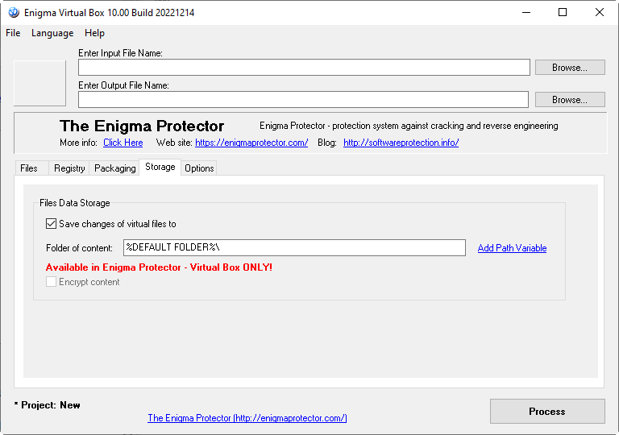

If storage is not used, virtualization allows to make changes to, for example, virtual files, but these changes will be discarded after file restart. Storage feature allows to save changes to virtual content on the local file system.
How does it work? If program makes changes to virtual content, let's imagine it is a file test.txt in virtual %default folder% (and storage folder is set to %My Documents FOLDER%), virtualization creates a folder %default folder% in the "My Documents" folder of the local computer and put test.txt file there which contains all the changes. When program is being restarted, virtualization loads test.txt from storage folder and program sees the changes.
Also, if any new files will be created in storage folder, packed program will automatically accept them and see like they are in the same virtual folder.
It is worth to use this feature to avoid program to make any changes to local computer, except the storage folder. For this purpose it is also recommended to change the properties of virtual folders and set the option "New Content" to "New files and folders become virtual", so all new files and folder will be written to storage folder.

Folder of content - storage folder on the local computer where the changes to virtual content will be stored
Encrypt content - allows to encrypt the content of the files saved to storage folder, so end user won't be able to view files content.
Available in Enigma Protector only.